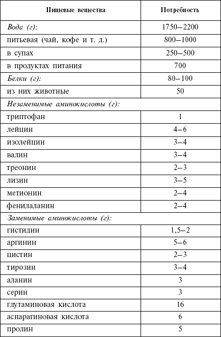
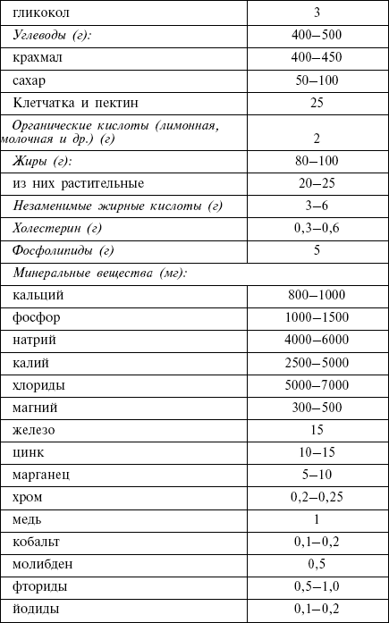
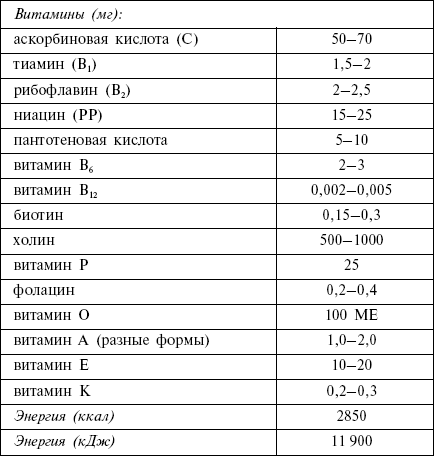

Гепард и корова, или в чем суть диеты

Вспомните, как выглядит стройный и подтянутый гепард, быстрый и изящный, – он есть только мясо. А теперь представьте корову, которая всю жизнь жует «низкокалорийную» траву. Кажется, это лучшая иллюстрация, позволяющая понять суть низкоуглеводной диеты.
Каково главное правило низкоуглеводной диеты? На этот вопрос легко может ответить даже человек, до сих пор ничего не слышавший о ней. Название говорит само за себя. Главное правило – ограничение углеводов, поступающих с пищей.
Низкоуглеводная диета разрушает все стереотипы. Раньше нам говорили, что именно углеводы, то есть преимущественно растительная пища, – основа любой диеты. Любой – может быть, но эффективной – вряд ли. Почему, вы поймете, прочитав главы о белках, жирах и углеводах и о том, почему усвоение и запасание их в организме происходит по-разному. В этой главе я постараюсь донести до вас основное – расскажу суть диеты и объясню механизмы, по которым она работает.
Углеводы наиболее легко усваиваются и, превращаясь в жир, откладываются в организме «про запас». Ограничив поступление «легких» углеводов с пищей, мы заставляем собственный организм тратить эти запасы, то есть использовать накопленный жир в целях обеспечения себя необходимой энергией. Лишние килограммы уходят. Пища, которую мы едим, идет на обеспечение жизненно важных процессов в организме (для этого нужны именно белки, а не что-то другое). На данном этапе, то есть для того, чтобы худеть, наш суточный рацион питания должен содержать не более 40 очков. Итак, мы едим, считаем очки и сбрасываем лишние килограммы.
По достижении желаемого веса наша задача меняется: теперь нужно сохранить вес, не допустить его прибавки. Мы расширяем рацион, увеличиваем количество условных единиц до 60 у. е. Если не превышать этот лимит, вес не вернется. Белков, жиров и минимального количества углеводов, поступающих с пищей (мы же не прекращаем питаться, мы лишь изменяем соотношение пищевых веществ), будет хватать ровно настолько, чтобы обеспечивать организм энергией, но не делать запасов неизрасходованных калорий. Увеличивая количество условных единиц, мы будем набирать в весе.
Что касается качества питания, огромный плюс низкоуглеводной диеты – ее вкусовая привлекательность. Основа диеты – ваши любимые блюда. Поверьте, это будет полноценное питание, практически не требующее ограничения. Мясо, рыба, птица, яйца, сметана, майонез – ешьте на здоровье!
В мясе количество условных единиц равно нулю. То есть продукты животного происхождение можно употреблять практически без ограничений. Однако это не значит, что, если вам лень считать очки, можно просто съесть ноль, потом еще ноль и т. д. без остановки. Во всем должна быть мера. Еще Гиппократ говорил: «Если принимать пищу более обильную, чем позволяет сложение, то это производит болезнь». Переедание (не важно, какими продуктами) – это всегда ненужная и вредная нагрузка на организм. Излишества и отсутствие чувства меры не пойдут на пользу. К тому же старайтесь следить, чтобы питание при низком количестве углеводов все же оставалось разнообразным. Это вполне достижимо, если подходить к делу с умом и заботой о себе.
Алкоголь в низкоуглеводной диете разрешается, но с некоторыми оговорками. Во-первых, всем известно, что алкоголь «раззадоривает» и подогревает аппетит, а также снижает самокритику и самоконтроль. То есть, выпив рюмочку-другую, вы попросту рискуете сорваться и перевалить через заветные 40 или 60 очков. И еще один момент. Водка, сухие вина – наиболее безопасные в плане содержания углеводов, они разрешаются бесспорно. Но будьте осторожны с пивом, сладкими винами, ликерами и прочими напитками, содержащими много сахара, а значит, и углеводов.
Кстати, о сахаре. Это практически стопроцентный углевод, количество условных единиц в нем составляет 99. Понятно, что сахар для приверженцев низкоуглеводной диеты не просто попадает в черный список, а становится персоной нон-грата. Забудьте про него! Чай и кофе – без сахара. Ничего не подслащивайте. Пирожные и торты оставьте тем, кто предпочитает быть «пышечками». Если вы решили худеть, от сладкого придется отказаться. В этом сходятся основатели практически всех диет. Пожалуй, на свете нет ни одного диетолога, считающего сладости и мучное безопасными для фигуры. Это высококалорийные продукты, в которых почти нет необходимых и полезных нам веществ. Ни витаминов, ни минеральных солей, только лишние калории, которые незамедлительно отложатся жировой прослойкой на вашем теле. Итак, сладкое исключаем. Избегать следует не только сладких и мучных блюд, но также картофель, хлеб, рис.
Как обстоит дело с потреблением жидкости? Мы с вами в отличие от жертв вредных и опасных методик будем худеть не за счет повышенного выведения из организма жидкости, а за счет сжигания запасов жира. Поэтому норма потребления жидкости остается традиционной, такой, какую рекомендуют врачи. Выпивать надо не меньше 1,5–2 литров в день, не считая супов и прочего. Желательно пить именно воду, причем без газа (любая газировка увеличивает риск возникновения целлюлита). Не забывайте, что сладкие напитки прямо-таки «кишат» углеводами, а значит, оказываются под запретом.
Овощи и фрукты ограничиваются, но не исключаются полностью. Чем слаще фрукт, тем меньше он нам подходит. Картофель изобилует сахарами, поэтому тоже – не наш продукт. Во фруктах и овощах, кроме витаминов, микро– и макроэлементов, содержится грубая растительная клетчатка, помогающая поддерживать эффективную работу кишечника. Клетчатка ускоряет продвижение переработанной пищи по желудочно-кишечному тракту, улучшает моторику кишечника, препятствует возникновению запоров. Если практически все необходимые витамины и минеральные соли мы легко можем получить из продуктов животного происхождения (этому будет посвящена отдельная глава), то клетчатка – эксклюзив растительных продуктов. Поэтому полностью отказываться от фруктов и овощей не стоит. Главное, выбирать те, которые содержат грубые растительные волокна и не превышать количество условных единиц.
Таким образом, питание остается достаточно разнообразным, если не считать отказ от сахара и мучного. Вкусные сытные блюда, возможность употреблять алкоголь не дают почувствовать себя лишенным радостей жизни. Жизнь продолжается, а лишние килограммы остаются в прошлом!
Ниже приводится традиционная таблица потребности человека в пищевых веществах. Количество воды (если это, конечно, не сладкое питье), витаминов и микроэлементов для последователей низкоуглеводной диеты остается неизменным. А вот что касается соотношения белков, жиров и углеводов для тех, кто хочет похудеть, оно меняется по уже известно схеме: углеводы надо ограничить до 40 у. е. при стремлении похудеть и до 60 у. е., если надо сохранить вес.


